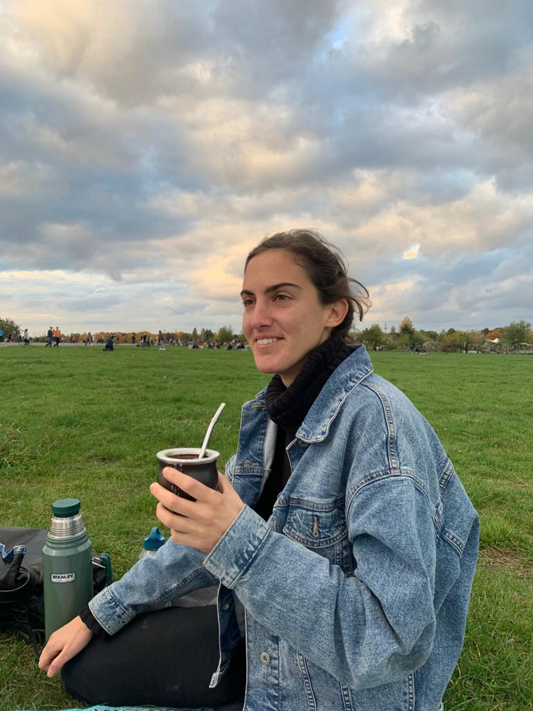

Revista
Esta revista es una iniciativa que nace a partir de las ganas de informar y conectar a los leyentes para que juntos podamos repensar nuestras acciones en el mundo y aprender de diversas formas de disminuir nuestro impacto negativo en él
Nuestra sede se encuentra en Berlín, la capital alemana que además de ser un centro urbano de renombre es la capital con más espacios verdes de Europa.
Mi nombre es Maria Nicolellis, editora jefe de la Revista Gea y estudiante de la Licenciatura en Comunicación de la Universidad de Belgrano.

En Alemania desde 2017 se realizan conferencias para presentar diferentes iniciativas con el objetivo de aumentar el número de abejas en las ciudades y municipios.

En Alemania desde 2017 se realizan conferencias para presentar diferentes iniciativas con el objetivo de aumentar el número de abejas en las ciudades y municipios.
Casi el 80% de todas las especies de planta con flor dependen de la polinización por insectos y el grupo de polinizadores más importante es el de las abejas. Por consiguiente, la protección de la fauna apícola no sólo contribuye de manera significativa a la conservación de la biodiversidad, sino también a la preservación de valiosos servicios del ecosistema.
Berlín presenta aproximadamente 322 especies de abejas, de las cuales 36 no han sido vistas desde 1990, por lo cual las dan por extinguidas o desaparecidas de la zona de referencia. Las razones de la muerte de las abejas son los monocultivos y el uso de pesticidas en la agricultura convencional. Además, muchas veces sucede que por estos mismos motivos, muchas especies de abejas terminan huyendo hacia la ciudad ya que allí encuentran favorables condiciones climáticas y plantas con baja cantidad de plaguicidas que pueden utilizar como alimento en forma de polen y néctar.
Porqué dependemos de las abejas para sobrevivir?
Steve Rogenstein es fundador de The Ambeessadors en Nueva York, un colectivo que tiene como objetivo conectar a las personas con la comunidad apícola para así difundir conciencia y aprecio por las abejas y otros polinizadores a través de eventos, investigación, programas educativos y arte entre otros. Rogenstein cuenta que existen pruebas artísticas del vínculo entre humanos y abejas, como el uso de miel, cera y propolio, de hace más de 10.000 años. Esto quiere decir que podemos encontrar pinturas sobre estas prácticas que datan del año 8.000 A.C. Lo interesante, explica Rogenstein, es que si las pinturas estaban siendo hechas en esa fecha, significa que la cultura apícola ya se venía practicando hace aún más tiempo.
En 2019 el Earthwatch Institute declaró que las abejas son los animales más importantes en el planeta. Además de los diferentes productos que nos brindan, como la miel, el propolio y la cera, que fue de gran importancia antes de la luz eléctrica, el más importante de sus aportes es sin duda la polinización.
Las plantas, como tantos otros seres vivos, deben reproducirse, pero es la única especie que tiene que hacerlo sin tener la capacidad de moverse. Por eso necesita de los polinizadores, que llevan el polen de flor en flor posibilitando así la reproducción de las plantas. Aunque las abejas no son las únicas que cumplen esta función, se estima que un tercio de todo lo que consumimos fue polinizado por una abeja.
Es seguro entonces afirmar que, sin las abejas, no tendríamos la capacidad de consumir alimentos esenciales tales como las frutas, los vegetales, todo tipo de frutos secos, miel y también otros muy importantes como la carne de vaca, la leche y todos los alimentos derivados de ella, ya que los alimentos consumidos por la vaca son también polinizados por abejas.
Cómo funciona la apicultura en Berlín?
En Alemania existe una organización jerárquica de la apicultura, por lo tanto a nivel nacional nos encontramos con la Deutscher Imkerbund (DIB), o Asociación Alemana de Apicultura. Luego los diferentes estados de Alemania poseen su propia asociación, en el caso de Berlín nos encontramos con la Berliner Imkervereinigung o Asociación de Apicultura de Berlín, que a su vez abarca otras 16 diferentes asociaciones correspondientes a barrios de la ciudad. Todas estas asociaciones mencionadas responden al DIB, a su filosofía, su ideología y a sus reglas de afiliación.
Por otro lado existen los apicultores independientes, que no se asocian al DIB ya que tienen posturas menos tradicionales y se vuelcan a lo que se llama “apicultura natural”. La asociación independiente de mayor renombre en Berlín se llama RegionalgruppeMellifera .
La distinción entre estos dos “bandos” es importante ya que se trata de maneras totalmente distintas de introducirse a la apicultura. Por un lado, los integrantes del DIB ejercen un tipo de apicultura que prioriza al humano y sus necesidades, mientras que los “apicultores naturales” se centran mayoritariamente en las necesidades de la abeja, es decir, proveerle a las abejas lo que ellas necesitan para que cumplan su función natural.
“El problema es que los apicultores tradicionales explotan a las abejas. Les roban toda su producción de miel, que no solo es su alimento pero también su medicina, y la sustituyen con agua con azúcar, que no posee las cualidades nutritivas de la miel. Sostienen prácticas como pinchar la abeja reina si esta no está siendo productiva, utilizar químicos para incentivar la productividad y suprimir enjambres, que son la manera natural que tienen las abejas de dividirse”, cuenta Rogenstein que promueve hace años una práctica apícola natural.
Actualmente en la ciudad existen 8 mil colmenas registradas, pero se estima que el total de colmenas existentes esté alrededor de las 10 mil. Entre el 80 y el 90 porciento de las mismas son producciones de aficionados, en Alemania la diferencia entre colmenas profesionales y no profesionales se da a partir del número de colmenas de la producción: hasta 30 colmenas es considerado un hobby, entre 30 y 70 es un área gris y a partir de 70 se considera como una producción profesional, con fines de lucro.
La apicultura berlinesa se encuentra con diversos desafíos en la contemporaneidad, como la extinción y desaparición de especies de abejas, la hostilidad con la que algunos grupos manejan a las abejas, el extenso uso de pesticidas en el monocultivo que termina entrando en el sistema de la abeja en el proceso de la polinización, entre otros. Por estos motivos y muchos más, en 2019 se propuso un proyecto de ley llamado “Estrategia para la protección y promoción de las abejas y otros polinizadores en Berlín”, que tiene como principal objetivo proteger a las abejas salvajes y melíferas (que en su mayoría se refugian en centros urbanos) en la ciudad de Berlín.

¿En qué consiste la iniciativa?
Cada vez más gente quiere tener abejas. Esto también se refleja en Berlín en el rápido crecimiento del número de colonias de abejas. En 2001, según los datos del DIB, se calcularon 3,12 colonias de abejas por kilómetro cuadrado; en 2017, esta cifra había aumentado a 7,94 colonias. El reto que plantea la afluencia de numerosos apicultores nuevos es garantizar una apicultura adecuada a las especies y con altos niveles de calidad.
El 14 de noviembre de 2018, el Departamento del Senado para el Medio Ambiente, el Transporte y la Protección del Clima, junto con el Departamento del Senado para la Justicia, la Protección del Consumidor y la Antidiscriminación, organizaron una conferencia sobre la estrategia apícola de Berlín titulada "Berlín está floreciendo - Más abejas para Berlín". El objetivo del evento no sólo era presentar el estado actual de los trabajos sobre la estrategia de las abejas de Berlín, sino también presentar y debatir los problemas de las abejas y otros polinizadores en Berlín de forma que se pueda atraer la atención del público. Además, se presentaron las esferas de acción y las medidas propuestas utilizando ejemplos concretos de otras ciudades y países.

Este evento llevó a rondas de debate y conversaciones en las cuales participó un gran número de agentes en el ámbito de protección de las abejas y la apicultura desarrollando así la “Estrategia para la protección y promoción de las abejas y otros polinizadores en Berlín” sobre una amplia base de debate. El enfoque principal fue tanto el tema de las abejas de miel como de abejas salvajes que no necesariamente producen miel.
El proyecto tiene una duración prevista de cinco años y su objetivo es hacer que la ciudad sea más favorable a los polinizadores y proporcionar información al respecto. Con la biodiversidad como núcleo de acción, uno de los principales objetivos del proyecto es la promoción de la diversidad biológica en Berlín con el fin de mejorar las condiciones de vida de los polinizadores.
El campo de acción comprende como temas centrales, la preservación, el diseño y el mantenimiento de espacios verdes públicos y privados, así como de zonas de propiedad del Estado y de otros grandes propietarios, que sean favorables a los polinizadores. Desde 2018, el manual se ha aplicado a determinadas zonas piloto en todos los distritos.

Erika Mayr
, apicultura de renombre en Berlín y autora de dos libros sobre apicultura urbana adentro de la saga “Die Stadtbienen” (Las abejas de la ciudad), explica que: “Un mayor control de las colmenas en la ciudad podría permitir más estudios sobre la densidad de las colmenas en las zonas urbanas, en relación con la biodiversidad de plantas y árboles. También permitiría una mayor cooperación entre los apicultores comerciales y los aficionados, además de subrayar que la apicultura no es sólo una empresa individual, sino que está conectada con el medio ambiente”.
Otro foco de extrema importancia en el proyecto es el de las Relaciones Públicas, es decir, la necesidad de ampliar su labor para así generar aceptación de la sociedad urbana. Es necesario transmitir conocimiento e información para crear aceptación y disposición para actuar. En la página web de “Diversidad biológica en Berlín” se puede encontrar todo tipo de información de los proyectos que están siendo llevados a cabo.
La apicultura en Berlín es particularmente difícil. La proximidad a los vecinos, las escuelas y la infraestructura hacen que los conflictos sean más probables que en la apicultura rural. Además, sólo una parte de los apicultores cumplen con la obligación prescrita de informar sobre la apicultura a las autoridades veterinarias, de modo que ni siquiera los veterinarios responsables tienen una visión completa del número real de colmenas y movimientos migratorios.
Por este motivo, la educación y asesoramiento de apicultores aficionados es de mucha relevancia para lograr un manejo profesional y no hostil de las abejas y otros polinizadores.
Silke Meyer es la fundadora de Salzundhonig , una iniciativa que fusiona diferentes tipos de arte como ilustración y collage con la apicultura ecológica desde 2006. Meyer cuenta que: “Una abeja no es un gato al que sólo hay que acariciarlo y darle comida para hacerlo feliz. Cada nuevo apicultor debería tomar un curso de apicultura y participar del sistema de padrinaje que existe dentro de la apicultura”. El sistema de padrinaje consiste en que un apicultor con experiencia acompañe a un nuevo apicultor, el padrino queda disponible para responder todo tipo de dudas y preguntas.
Meyer enfatiza la importancia de la educación de la sociedad pero también de los apicultores, explica que una forma más natural de tratar a las abejas promueve el fortalecimiento de las propias colonias, las hace más resistente a enfermedades y les permite ocupar su lugar útil en el ecosistema.
Hasta el día de hoy, se han desarrollado numerosas medidas para proteger y promover las abejas en Berlín. La ciudad está cumpliendo su responsabilidad de contribuir a la protección de las abejas y otros polinizadores, promoviendo así la biodiversidad y calificando la apicultura. La estrategia de Berlín sobre las abejas constituye la base para tener más en cuenta el tema de la protección de las abejas en el futuro en el marco del desarrollo urbano y el mantenimiento de los espacios abiertos.


Ya es suficientemente raro comunicarte con personas que conocés a través de plataformas digitales. Verlos con sus diferentes fondos en las pantallas. Algunos optan por lo simple: un estante de libros en el living de sus casas, otros optan por algo más ingenioso: las diferentes imágenes que se pueden elegir para que se proyecten de fondo mientras se toman un mate o beben sorbitos de agua de una botellita térmica.
Más raro aún es participar de una conferencia que está sucediendo en Estados Unidos a la una y media de la tarde con profesionales que nunca tuviste contacto, mientras una está en Berlín en pijama en su cuarto porque son las diez y media de la noche.
La conferencia se llamó “La evolución de la agroecología como práctica, materia de investigación y movimiento social” y fue propuesta por el CASFS, o Center for Agroecology and Sustainable Food Systems, una organización de investigación, educación y servicio público dedicada a promover un sistema alimentario ecológicamente sostenible y socialmente justo.
Debemos ir por partes porque no solo la conversación generada fue extremadamente cautivadora, pero también porque fue mi primer evento online por circunstancias pandémicas y hay muchas cosas interesantes en este tipo de situaciones si uno se detiene a observarlas.
Me senté en mi cama, sabía que tenía que clickear el link de Zoom a las 22:30, hice y re hice el cálculo del horario en mi cabeza para estar completamente segura que 13.30 en California era equivalente a 22.30 en Berlín. Me dio un poco de nervios la posibilidad de que al apretar el link la cámara se fuera a prender y todos estos desconocidos fueran a ver el interior de mi cuarto, pero claramente Zoom tiene una opción de conferencia en la cual solo aparecen los presentadores y expositores del encuentro. Debo admitir que un poco me decepcioné cuando me di cuenta que a nadie le importaba dónde estaba o cómo estaba vestida.
El panel estaba compuesto por tres mediadores, que habían seleccionado fotos de huertos pequeños o campos con árboles para el fondo de sus respectivas imágenes, y cuatro profesionales que tendrían cada uno diez minutos para exponer su punto de vista sobre la agroecología, o mejor dicho, como la agroecología se fusionaba con sus vidas cotidianas y sus áreas de estudio. Por algún motivo los cuatro decidieron mantener la simplicidad y mostrar sus casas sin alterarlas tecnológicamente.
Otras dos cosas que me llamaron la atención de la composición del panel fueron: en el grupo de los cuatro profesionales que hablaron en el evento, tres eran mujeres y tres tenían origen latinoamericano. Es siempre lindo sentirse representada en cualquier tipo de eventos y aunque el movimiento agroecológico es muy grande en América Latina, sigue siendo un evento en Estados Unidos e incluir profesionales de distintos países fue una elección de ellos.
La primera persona que habló encajaba en las dos categorías mencionadas previamente, Ana Elisa Pérez Quintero de Puerto Rico. Quintero, co-directora de la Colmena Cimarrona, una organización que practica la economía solidaria, la agroecología y la apicultura, priorizó en su presentación la situación actual de Vieques, una isla municipio que forma parte del archipiélago de Puerto Rico. Explicó que Vieques solía ser muy importante en el mapa de la agricultura antes que los grandes huracanes arrasaran el área y la ocupación militar de Estados Unidos que empezó en 1941 complicara aún más las cosas. Hoy en día, la isla importa 80% de los alimentos que consume y se ve en una situación de extrema pobreza, generando así diversas enfermedades como la diabetes y la anemia.
Quintero comparte luego, desde su pantalla a las nuestras, una imagen del sector de frutas y verduras del supermercado de Vieques en un día común y corriente: un estante con cajones de madera en su mayoría vacíos, con excepción de tres que contenían una que otra verdura. “Para nosotros, la agroecología significa una manera de sobrevivir, de organizar agricultores para intercambiar conocimiento y promover la salud”, explica Quintero mientras una mira la foto del supermercado y una se siente culpable por sus problemas de primer mundo.
Haciendo un giro de 360 grados en el enfoque de la conversación, y ubicándonos nuevamente en lo que suelen llamar el “mundo desarrollado”, la siguiente profesional en compartir su visión fue una joven llamada Ali Loker, a la que no sé si tuvimos buena o mala suerte de escuchar ya que estaba suplantando a su profesor que no pudo presentarse por un accidente que había sufrido el día anterior, y por lo tanto se encontraba en el hospital esperando por un operación en el brazo. El mundo hoy es online pero todavía poseemos cuerpos naturales. Por ahora.
Como buenos ciudadanos todos nos preocupamos virtualmente durante algunos segundos por el profesor y deseamos su rápida recuperación. La palabra fue pasada a Loker, que con una sonrisa en la cara agradeció a todos y a lo largo de la presentación mencionó a su profesor varias veces con admiración.
Loker difinió la agroecología como un una ciencia, una práctica y un movimiento, y explicó que resulta más fácil definir la agroecología mencionando algunos de sus principios que recurriendo a una definición de diccionario. Algunos de los principios que se podían leer en la diapositiva eran: biodiversidad, enfoques holísticos, recursos locales, sistemas alimentarios locales, equidad y dimensiones sociales. Utilizando conceptos abarcados por la agroecología, su comprensión se hace más tangible.
Loker, como asistente de aprendizaje de un curso de agroecología, pasa entonces a hablar sobre la importancia del proceso educativo/académico en la misma como herramienta para construir profesionales del rubro, explica que la idea es cambiar mentalidades y hacer con que los estudiantes actúen de manera responsable, que el foco no está en apenas aprender sobre el tema. De esta manera, los educadores juegan un papel importante en el futuro de la agroecología. Cabe comentar que la educación juega un papel importante en casi todos los ámbitos de la vida, pero como a algunos no les gusta reconocerlo, necesitamos profesionales académicos que se lo recuerden a la sociedad de vez en cuando.
Siguiendo la rama de la educación, el siguiente profesional a tomar la palabra es el también latinoamericano Ernesto Méndez, profesor de agroecología y estudios ambientales en la Universidad de Vermont.
Como académico, se enfoca en la evolución de la agroecología y separa ese proceso en cuatro “olas”. La primera está ubicada entre los años 1930 y 1990 en la cual el término “agroecología” empieza a surgir. La segunda, que empieza en los principios de los años 2000, se caracteriza por la pregunta “¿Cómo ubicamos la ecología en los sistemas alimenticios?”. La tercera empieza alrededor de 2010 y se centra en la inclusión de la agroecología en los movimientos sociales y por último, la cuarta ola, la que estamos viviendo hoy, en la cual la pregunta es cómo hacer que este sea un movimiento inclusivo y transdisciplinario que pueda ir mas allá de la ciencia (ver recuadro). Méndez cierra sus diez minutos compartiendo que lo que lo entusiasma en este momento es que: “práctica, ciencia y movimientos sociales se están uniendo y esta es la clave de la transformación real. Este es el momento en el cual nos encontramos”.
Aidee Guzmán es la que sigue en la lista, candidata a un doctorado en la Universidad de California, hija de agricultores mexicanos, me roba el corazón apenas veo en la pantalla a una de las mías, una mujer joven latina.
Empieza aclarando que definir la agroecología es un proceso complejo, como ya mencionaron otros presentadores anteriormente, y que una de las complicaciones es proveniente del hecho que hoy la agroecología se encuentra ubicada también adentro de movimientos sociales y políticos. De esta manera, cuenta que su perspectiva del tema parte de su vida personal, su infancia y su lugar de origen, habiendo crecido en una granja en California, Guzmán explica que desarrolló una gran admiración por los agricultores, lo que la llevó a trabajar con agricultores inmigrantes refugiados, en su mayoría mexicanos.
“Hoy la agricultura abarca dimensiones políticas e ideológicas importantes. Pensar que los agricultores no están politizados es apenas ignorancia”, explica Aidee, y resalta la importancia de hacer un giro de poder hacia los agricultores. Destaca además, la importancia de la cultura comunitaria en esta práctica, mencionando los trabajos de la anterior presentadora Ana Elisa Pérez Quintero, ya que ambas enfatizan que es necesario compartir conocimientos en las comunidades para avanzar de forma no solo simbólica pero también real. Cierra su presentación con un mensaje que, no se cómo, dado el contexto actual mundial, nos genera a todos algún tipo de optimismo en relación al futuro: “La agroecología nos muestra que otro mundo es posible”.
De alguna manera el orden de los presentadores estuvo muy bien orquestada, ya que se empieza con un pantallazo de la realidad de otros países menos privilegiados, luego se explica un poco como avanzó la agroecología en todos estos años y termina con un incentivo a seguir aprendiendo y tratando de adoptar sistemas más justos tanto en términos ecológicos como socio-políticos y económicos.
Hubieron también varios chistes que no mencioné a lo largo de las presentaciones, porque como este es un evento digital y el único micrófono que está prendido es el de la persona que se encuentra hablando, los chistes se convierten en un stand up sin risa que generan cortos pero intensos segundos de incomodidad. Cuando terminó la charla cerré las ventanas abiertas del explorador y apagué la computadora, quedándome de pronto sola en mi cuarto, mirando mi reflejo en la pantalla negra de la notebook con un sentimiento agridulce que combinaba una sensación de que el mundo esta siendo destruido lentamente y el saber que existen, no sólo en mi pantalla, muchísimas personas que intentan salvarlo.

Si te interesó el tema, acá te dejamos un video del profesor Ernesto Mendez sobre agroecología y conservación ambiental para el Conversatorio Interdisciplinario de Galápagos en 2019.
“El hambre hoy se traduce en obesidad”, Vera Krause sobre los alcances del Proyecto Edible Cities

Toco el timbre del primer piso de un departamento en el barrio de
Friedrichshain, el famoso barrio alternativo al este de Berlín. Me abre la puerta con
una sonrisa Vera Krause, una joven argentina de 27 años recibida en Ciencias
Ambientales en la Universidad de Buenos Aires (UBA), que hace dos años se mudó a
Berlín para participar del proyecto Edible Cities (ciudades comestibles en español) y
hacer un máster en Geografía y Cambios Globales en la Universidad de Humboldt.
Motivada por la búsqueda de alternativas ecológicas al estilo de vida actual,
Krause pertenece a la nueva generación. Con una ideología forjada, está cansada de las
excusas expuestas por las generaciones anteriores y porta con ella diversas ideas para
cambiar desde lo pequeño y comunitario, el modo en el que vivimos.
Desde que vive en Berlín participa del proyecto Edible Cities, que tiene como
objetivo fomentar la agricultura urbana en diferentes ciudades del mundo de una
manera interdisciplinaria, en la cual se entrelacen aspectos económicos, sociales,
políticos y ambientales. Es una iniciativa financiada por la Unión Europea que cuenta
con un presupuesto de 11 millones de euros y tendrá una duración de 5 años. Dadas
las dimensiones del proyecto me encuentro con Vera, que participa del mismo desde
su inicio, para entender la importancia de esta iniciativa, los desafíos que se presentan
y los mensajes que intenta transmitir.
Mientras calienta agua para el mate con la naturalidad que se genera cuando
dos personas que comparten una nacionalidad se encuentran en un país ajeno,
empezamos a charlar y vamos objetivamente al grano:
¿Qué tipo de proyectos llevan a cabo las ciudades que participan de Edible Cities?
Con el objetivo de fomentar siempre la agricultura urbana, se trata de idear
soluciones, o edible solutions (soluciones comestibles en español), por lo tanto
contamos con muchos huertos urbanos, sectores de polinización que incentivan la
biodiversidad, eventos de promoción de pequeños y medianos productores,
producciones frutales con especies nativas.
Acá en Berlín uno de los proyectos más grandes es el de Prinzessinnengarten, que
tiene tres sedes, ubicadas en Hellersdorf, Moritzpltaz y Neukolln. Son huertas
comunitarias que llevan a cabo diversos tipos de proyectos y actividades abiertas al
público con el objetivo también de promover la ideología de la producción local.
En Andernach, también en Berlín, hay un proyecto de huerta urbana que cuenta con
participación de los niños de una escuela por ejemplo.
¿Porqué elegiste trabajar con Edible Cities, qué es lo que lo hace más llamativo que
otros proyectos ecológicos?
Lo que más me gusta de este proyecto es que tenga un enfoque local y una pata social
muy grande, involucrando por ejemplo vecinos o escuelas. Además, plantea algo que
para mi es necesario, que es traer la producción agrícola a las ciudades. Berlín es
considerada la capital más verde de Europa, y es no solo importante, pero también
muy útil poder transformar esos espacios verdes en algo que se pueda utilizar en
términos agroecológicos. Por ejemplo, en vez de tener un árbol cuya única función es
estética, plantar un manzano o algún árbol con flores cuyos frutos puedan
transformarse en productos locales, fomentando las pequeñas economías.
El proyecto cuenta con dimensiones extraordinarias y se encuentra presente en
diferentes ciudades del mundo ubicadas en diversos continentes. En Europa, Edible
Cities actúa en Rotterdam, Oslo, Sant Feliu de Llobregat, Letchworth, Šempeter-
Vrtojba, Berlín y Andernach. En África tienen proyectos ubicados en Cartago y Lomé, y
en América Latina sus focos de trabajo son Montevideo y La Habana.
¿Qué tipo de desafíos encuentra Edible Cities mientras desarrolla sus planes e ideas?
La verdad es que existen diversas dificultades en la práctica, es difícil hacer con que la
gente se comprometa de verdad. Además, un gran obstáculo es la faceta burocrática
cuando un productor o un proyecto se quiere sumar a Edible Cities, son tantos los
formularios a rellenar y las exigencias de la Unión Europea que termina obstaculizando
proyectos futuros.
¿Cómo crees que estas iniciativas influyen en la mentalidad de la gente?
Quiero creer que estos proyectos hacen con que se involucre cada vez más gente,
tanto en lo pequeño y cotidiano como en la movida ecológica en términos más
generales. Por ejemplo, si tengo cerca de casa un mercado local un día por semana,
capaz se me prende la lamparita y digo, en vez de ir al supermercado a comprar
manzanas en un paquete de plástico, me conviene ir al mercado a comprar frutas y
verduras frescas. Cuando la gente lo ve materializado y ve que funciona, ahí es cuando
se motivan y se suman al movimiento. Hay que mostrar los resultados para lograr el
público. Las redes sociales nos hacen creer que todos llevan una dieta orgánica y
vegana, pero entre las fotos de Instagram y la realidad hay un largo trecho.
Krause explica además porqué es importante llevar la agricultura a los centros
urbanos dividiendo la explicación en dos cuestiones principales. La primera es el
importante papel que juega la presencia de espacios verdes en las ciudades a la hora
de evitar islas de calor, que son la acumulación de calor y la mala calidad del aire que
Acá de dejamos un video explicativo de las islas de calor
se genera cuando hay mucho hormigón presente, explicitando así la importancia de
generar y expandir los espacios verdes en general en las ciudades.
En segundo lugar, y vinculándolo más con la agricultura, explica que debemos
pensar los ecosistemas como sistemas que tienden al equilibro, y que las actividades
antrópicas (humanas) desestabilizan ese equilibrio haciendo con que un sistema
ecológico sea llevado a diferentes estadios de alteración no natural, lo que resulta en
que a veces sea muy difícil o hasta imposible volver al estadio inicial del balance
ecosistémico. Ahí es donde la agricultura urbana termina siendo la respuesta, ya que
es la que se encarga de generar biodiversidad, que a su vez es la responsable por
funciones ecosistémicas básicas como por ejemplo la captación de dióxido de carbono.
Para contar con biodiversidad debemos, entre otras cosas, traer la agricultura a la
ciudad.
¿Cómo se vincula la agricultura con lo social en este tipo de proyectos
agroecológicos?
La palabra agroecología por definición tiene un componente social. Somos muchas
personas las que habitamos la tierra y eso hay que tenerlo siempre en cuenta. El
hambre hoy se traduce en obesidad, las clases menos privilegiadas no tienen opciones
a la hora de elegir qué comer, es decir, no tienen como pagar alimentos sanos y
frescos.
Este es el tipo de movimiento que realmente se compromete con alimentar al mundo,
no el mito del monocultivo y de la soja. Un ejemplo claro de cómo el monocultivo
afecta lo social es el de la emigración rural, es decir, la migración de productores de los
campos a las ciudades porque no tienen condiciones de competir con las producciones
masivas. Nuestra idea es que los productores pequeños y medianos, si así quieren,
puedan quedarse en el campo con sus parcelas de tierra contando con la posibilidad
de subsistir.
A lo largo de nuestra conversación Krause enfatizó múltiples veces la
importancia de la generación de biodiversidad, explicando que en un contexto de
cambio climático como el que vivimos hoy, los problemas como las sequías, las
inundaciones, la elevación del nivel del mar y los refugiados del cambio climático son
todas cuestiones que se pueden empezar a solucionar a través de la implementación
de biodiversidad en los centros urbanos. Cuenta que existen diversas maneras
creativas de lograrlo ya que en las ciudades hay varios terrenos baldíos o techos sin
utilizar que pueden convertirse en techos verdes.
Por último, como nos encontramos en una situación pandémica sin
precedentes en la historia, nos referimos al “elefante en la sala”:
Hablemos del contexto Covid-19, pensás que va a influir en la manera de consumir
de las personas? Creés que van a tener más interés por saber de dónde vienen los
alimentos que consumen?
No sé sinceramente, se habla de una nueva normalidad, pero parece que las
personas en dos años se olvidan de todo. Una cree que las cosas están cambiando
pero a veces lo que pasa es que nos encontramos rodeados de personas que piensan
como nosotros. La realidad del habitante de Berlín y de otras grandes ciudades es
volver del trabajo y comprar una comida lista empaquetada en plástico. En primer
lugar la gente debería tener acceso a la información, para así poder elegir qué comer y
de qué manera lo que come fue producido. Ese para mi es el primer paso.

Los motivos que pueden llevar a una persona a dejar de consumir productos
provenientes de animales son variados. Puede ser una posición ética, de salud, o
incluso de presión social, pero muchas veces se obvia la carga política que sostiene esa
decisión.
Como todos los movimientos sociales, el vegetarianismo y el veganismo
mutaron a lo largo de los años. A principios de siglo era más común escuchar de los
vegetarianos que no comían carne porque estaban en contra del maltrato animal o
porque no se identificaban con el especismo. Hoy, con el veganismo en alta, es más
común escuchar de los veganos que no consumen productos animales porque la
producción de los mismos está estrictamente ligada a la deforestación y por
consecuencia a la crisis climática.
La verdad es que, aunque el segundo motivo tiene una dimensión política
mucho más explícita, ambos se encuentran repitiendo los valores originales de la
izquierda: están en contra del sistema de explotación capitalista. Ambos, con
diferentes argumentos, dietas, activismos y maneras de expresarse, luchan, sabiendo o
no, contra la visión antropocéntrica del mundo que lleva a la explotación de recursos
naturales de forma indiscriminada.
Luchan en contra de la objetificación de los
animales para su consumo masivo.
No es ningún secreto que el consumo de carne y sus derivados contribuye a la
crisis climática. Según Greenpeace , entre 1960 y 2011 la producción de alimentos de
origen animal fue responsable a nivel mundial del 65% de los cambios en el uso del
suelo y de la expansión de la tierra cultivada. Para que los porcentajes se hagan más
tangibles, en los últimos 25 años se deforestó una superficie equivalente al territorio
de la India. Además, según el Fondo Mundial para la Naturaleza (WWF) el ganado es
responsable del 14.5% de las emisiones directas mundiales de gases de efecto
invernadero de la humanidad.
Lo que quiero decir con esto es, el movimiento vegano vegetariano presenta
mil y un motivos por los cuales no consumir, o consumir menos productos de origen
animal. Y todos estos argumentos, cuando encontrados con los de la oposición, que
normalmente rodean la plata y la tradición, tienen dimensiones éticas, científicas y
matemáticas mucho mejor plasmadas. Por eso, hoy en día, la carne empieza a ser
símbolo de conservadurismo.
Cuando se quiere generar un cambio en la sociedad, la tradición habla más
fuerte. Por este motivo, el veganismo simboliza un movimiento transgresor que viene
a cambiar ideologías, proponer ideas y mostrar que otras cotidianidades son posibles,
pero que primero hay que despojarse del miedo a lo nuevo y a lo distinto. El
veganismo nació para romper con lo establecido, es un movimiento progresista, y sí, es
un movimiento de izquierda.